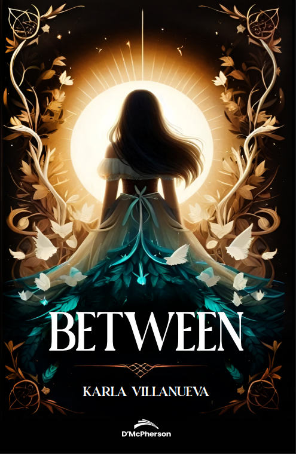
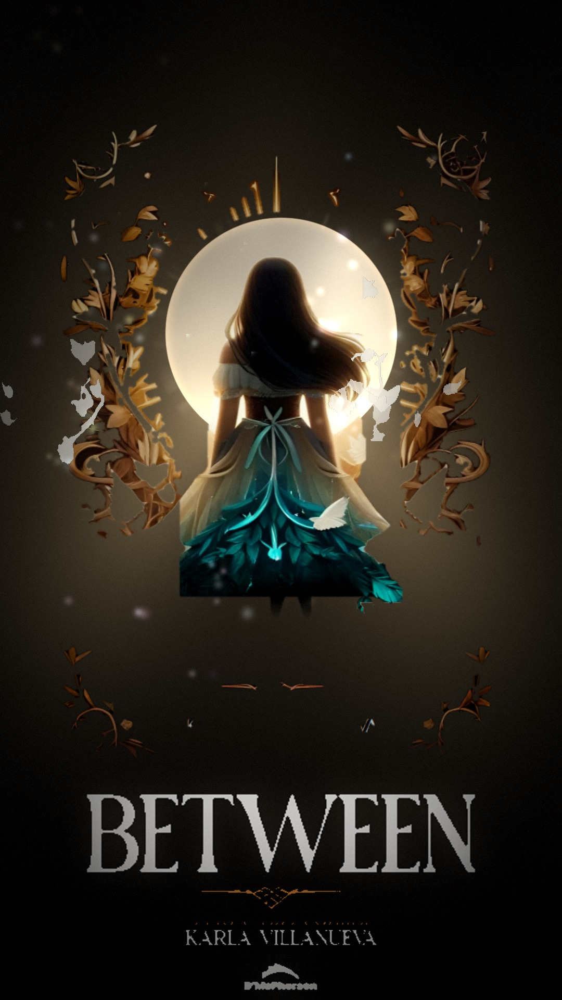
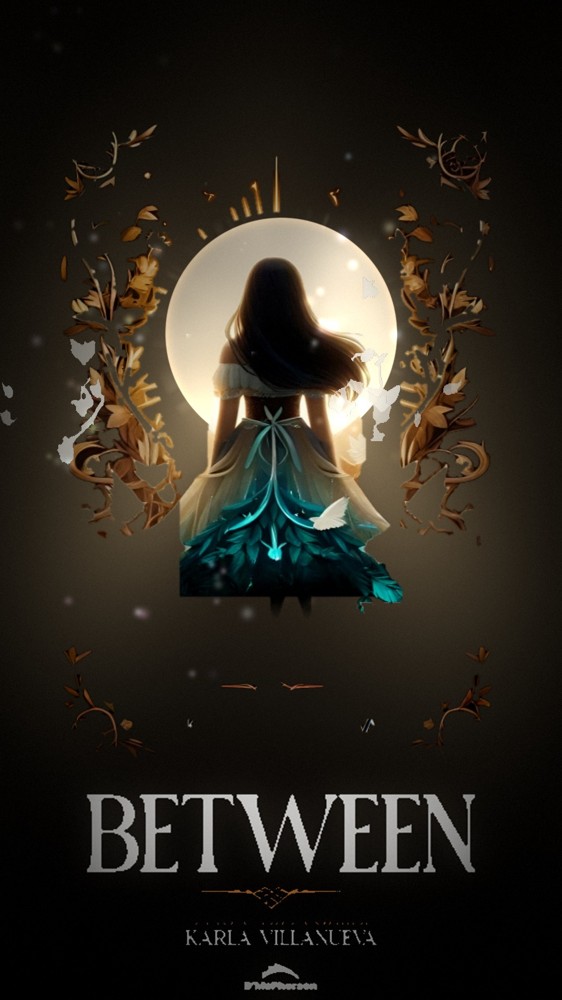

Mansklings
El pueblo de la protagonista
A los dieciséis años, una de sus miembros puede recibir la bendición de la diosa de la Luna. Solo unos pocos son elegidos.

Novela de fantasía épica juvenil
«Una bendición puede ser un regalo… o una condena.»
A sus dieciséis años, el destino de una joven manskling queda en manos de la diosa de la Luna. Solo unos pocos son elegidos para recibir su don: un poder capaz de iluminar incluso los rincones más oscuros del mundo.
Formatos y disponibilidad en la ficha de Amazon.
Mansklings, diubaks y cazuts comparten pasillos, salones y secretos en una prestigiosa academia, donde el eterno conflicto entre el bien y el mal —entre la luz y la oscuridad— se juega escena a escena.
Desde tiempos inmemoriales, la diosa de la Luna ha concedido un regalo especial a los pueblos protegidos por su manto. Solo unos pocos afortunados reciben esta bendición, que puede iluminar incluso los rincones más oscuros de su mundo. La protagonista de esta historia cumplirá dieciséis años, edad en la que un miembro del pueblo manskling puede recibir esta dicha. ¿Será la elegida? ¿Surgirá alguna rivalidad y conflicto?
La protagonista deberá enfrentar secretos antiguos, rivalidades peligrosas y fuerzas que amenazan con romper el frágil equilibrio entre la luz y la oscuridad. Entre nuevas amistades y decisiones que marcarán su vida para siempre, descubrirá que no todo poder trae paz… y que algunas verdades pueden cambiarlo todo.
La autora sabe que para crear lo fantástico también debe comprenderse lo real; por eso, en un ambiente donde todo parece posible, fusiona misterio y emociones profundas que ayudan a entender nuestra búsqueda de la felicidad y del bien. El respeto a la pluralidad, el amor, la amistad, la solidaridad y la paz son valores que la novela defiende para contrarrestar la guerra y el odio.
A los dieciséis años, una de sus miembros puede recibir la bendición de la diosa de la Luna. Solo unos pocos son elegidos.
Llegan con sus propias historias y feridas. Bajo el mismo techo, sus caminos se cruzan una y otra vez.
El conflicto nunca se apaga del todo. Cuando la luna se eclipsa, sus decisiones pondrán a prueba el equilibrio.
Magia y emoción profunda no van por separado. La novela usa lo fantástico para hablar también de cómo buscamos la felicidad.
«Solo cuando la paz sea restaurada, todas las preguntas tendrán respuestas…»Un personaje de Between

Impresa VerticalLa portada impresa está compuesta para un formato de 495 × 760: el título cae sobre el vestido, justo donde la ilustración es más tupida. Para un vídeo vertical eso no funciona —las letras se pierden y la luna queda descentrada—.
La versión animada se recompuso sobre 1080 × 1920: la luna se centró en el eje y el título se-situó en un bloque de negro limpio, por debajo de la ilustración, con un tamaño mayor. Es el mismo arte, no uno nuevo.
Arrastra, o haz foco en el control y usa las flechas ← →

Karla Villanueva (Panamá, 1997) es escritora e ingeniera de software. Se apasiona la fantasía, el romance y las historias que intrigan, y las cuenta a través de la escritura y el dibujo.
Between es su primera novela: una historia sobre el destino, la identidad y la lucha interna, escrita para quienes saben que comprender lo maravilloso empieza por comprender lo real.
— Karla Villanueva
Una novela de fantasía épica juvenil donde el destino, la identidad y la lucha interna se entrelazan.
ISBN 9962141699 · Editado por D'McPherson · Consulta otros formatos en la ficha de Amazon

Esta misma imagen, desmontada en trece capas y animada por etapas: la luna enciende, los rayos salen, el marco se dibuja y las letras se componen.